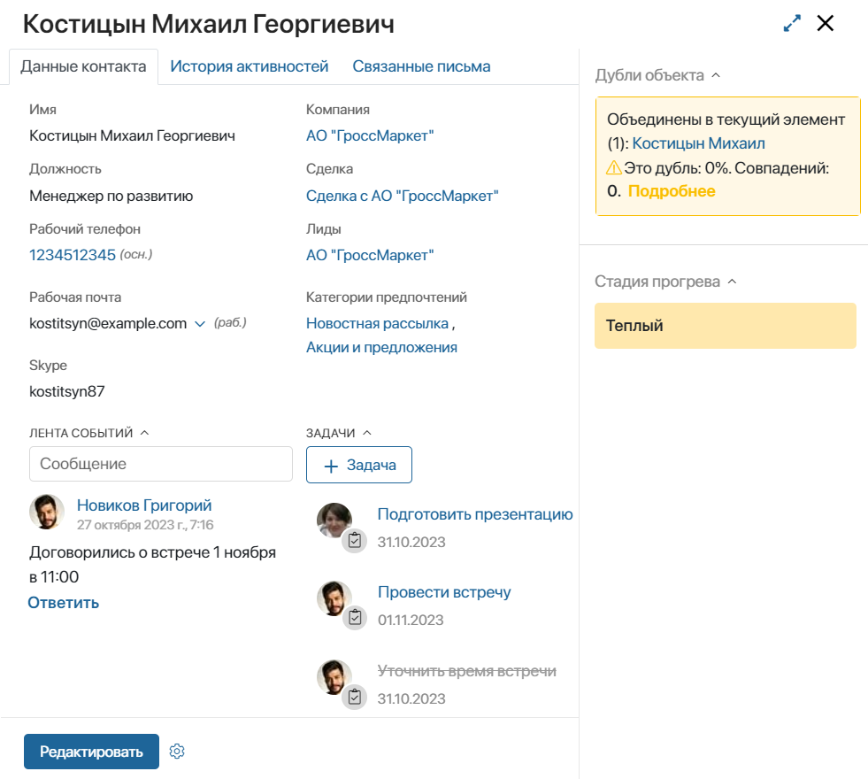

В карточке контакта хранится информация о представителе компании-клиента: его имя, должность, контактные данные, категории предпочтений для почтовой рассылки, связанные задачи и т. д.
Основная информация отображается на вкладке Данные контакта.
При использовании лицензии решения CRM в карточке доступны вкладки История активностей, Связанные письма, а также отображение на боковой панели дублей и стадии прогрева контакта.
Пользователи, входящие в группу Администраторы, могут настроить внешний вид карточки контакта. Например, если в компании используется раздел Маркетинг, в карточке можно отобразить список всех рассылок, отправленных контакту на электронную почту.
Вкладка «Данные контакта»
На вкладке представлена основная информация о контакте, а также лента событий и связанные задачи.

В карточке хранятся следующие данные:
- имя и должность контактного лица;
- рабочий телефон, электронная почта, аккаунт Skype;
- компания, к которой относится контактное лицо, а также связанные сделки и лиды;
- категории предпочтений для рассылок на электронную почту.
Чтобы изменить данные контакта, нажмите кнопку Редактировать.
В нижней части карточки отображается Лента событий. Здесь можно обсудить вопросы с коллегами и просмотреть историю взаимодействия с контактным лицом.
Справа от ленты событий показаны текущие и завершённые задачи, связанные с контактом. Чтобы создать задачу по контакту, нажмите кнопку + Задача, введите название, исполнителя и срок.
Если необходимо указать дополнительных участников, добавить описание, прикрепить файл и т. д., перейдите к расширенным настройкам задачи. Для этого рядом с полем Срок нажмите значок .
Вкладка «История активностей»
На вкладке отображаются действия, направленные на коммуникацию с контактом. Данные фиксируются, если при совершении действия в решении ELMA365 CRM пользователь указывает определённый контакт, с которым нужно связаться.
В списке показываются следующие активности:
- Входящие — действия, совершённые клиентом: открытие письма-рассылки и переход по вложенной ссылке. Также к входящим относятся действия пользователя ELMA365: добавление лида или сделки, выполнение задачи CRM;
- Исходящие — действия в ELMA365: создание задачи CRM, отправка письма из встроенного почтовика.
Записи в списке можно сортировать по периоду и виду активности. Для этого задайте значения в параметрах и нажмите Применить. Чтобы сбросить поиск, нажмите Очистить все.
По количеству действий, совершённых с контактом, рассчитывается стадия прогрева — его готовность к покупке.
Вкладка «Связанные письма»
Письма, полученные или отправленные через раздел Почта, можно связывать с контактами. Тогда вы увидите всю переписку:
- в карточке контакта;
- в элементах приложений, в которых указан контакт. Например, в лидах и сделках, где по умолчанию настроено поле для добавления контакта.
Чтобы прочитать письмо полностью, нажмите на его текст или заголовок в карточке контакта.
Когда вы привязываете письмо к контакту, пользователи, у которых есть права на просмотр элемента, увидят всю переписку с клиентом.
Письмо можно привязать к контакту:
- автоматически. В этом случае вся переписка будет отображаться в карточке контакта и элементах приложений, в которых указан этот контакт. Чтобы включить такую привязку, обратитесь к администратору системы;
- вручную со страницы письма. С этим способом вы можете сами определить, какой диалог с клиентом добавить в карточку контакта и связанных с ним приложений. Например, не привязывать письма, когда вам нужно максимально ограничить доступ к переписке на конфиденциальную тему. Чтобы добавить Контакты в список приложений для связи, обратитесь к администратору системы.
Обратите внимание, если в карточке контакта не отображаются виджеты Вкладки и Связанные письма, администратору системы нужно добавить их на форму вручную. Подробнее читайте в статье «Шаблон формы».
Боковая панель карточки
На боковой панели отображаются следующие данные:
- Дубли — виджет, с помощью которого вы можете находить контакты с одинаковыми данными, объединять их и продолжать работу только с одним элементом. Отображается на карточке, если администратор системы включил поиск дублей по приложению Контакты;
- Стадия прогрева — стадия готовности клиента к успешному закрытию сделки. Рассчитывается по сумме зафиксированных в системе взаимодействий с контактом: совершён звонок, проведён вебинар, отправлено письмо и т. д. По умолчанию контакту присваиваются стадии: Новый, Холодный, Теплый, Горячий. Администратор системы может настроить стадии прогрева: задать названия и условия их присваивания.